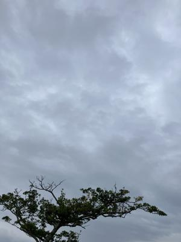
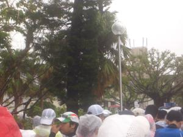
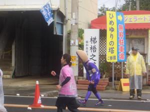
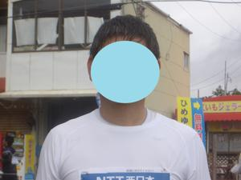

うるがいの話 ある日
最新: 雨天決行【うるがいの話 ある日】とは 一日だけのプログです
『うるがいの話』の最新一日だけのプログで、通信料が少なく経済的だ。カニの画像をクリックすると全ての日付が載る『うるがいの話』サイトを表示します
|
|
【うるがいの話】 うるがい(ｳﾙｶﾞｲ urugai)とは、『もずくがに』の名前でとても大きくなります。 |
|---|---|
|
|
【カミマヤーの話】 猫のことを方言でマヤーといいます。カミマヤー（kamimayaa）とは、神の猫のことです。 |
|
【たながぁの音楽】 たながぁ（ﾀﾅｶﾞｰ tanagaa）とは手長えびのことで、何種類かあり大きいのは車 エビぐらいになります。 |

|
【ぶながぁの話】 ぶながぁ(ﾌﾞﾅｶﾞｰ bunagaa)とは、赤い髪の毛、赤い身体、そして身長は１ｍ２０ｃｍ ぐらい、川の蟹を食べているの目撃された。場所は沖縄県国頭郡大宜味村のと ある村僕の隣近所に住んでいる爺さんから、聞いた話です。 |
|
|
【ギーマの話】 ギーマ(giima)とは、山原の里山に咲くスズランに似た、 花を付けます。実は食べられます、 気が付くと口の周りが紫になっています。 |
2023年12月04日 (月）雨天決行
15:44

昨日の天気から、朝からの雨である。一日づれただけだが。いつも、いい天気
とは限らないのである。一番雨に困ったのは、第２８回（２０１２年１２月２
日）大会雨・気温２１度だった。スタートの時点で、靴はぐしょぐしょ、雨合
羽を着て走る、２５キロ地点の ひめゆりの塔 の当たりで小雨になったのでカ
ッパを外して走った。
１．開始１８分前、小雨の中開始を待つ

２．１２時４８分 ２５キロ地点のひめゆりの塔の当たり

３．ひめゆりの塔の当たりで記念写真 髪が小雨で濡れている

小雨の中、３週間ぶりに泌尿科へいく。念のためか、３度目のエコー検査と尿
検査を行う。左側の５㎜ほどの石があると脅される。その時は、またお世話に
なりますと先生に言う。待合室にいると、『今朝激しい痛みに襲われ、来まし
た今、痛いです！』と飛び込みの６０代の男性が、痛そうな様子で受付の手続
きをしていた。ウン、その痛みわかるぜ、同志・・・。
１５時３３分 ビットコインの総資産 ￥１７、６７９（↑９０１オオ！）